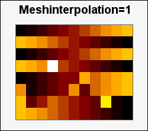
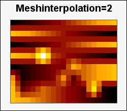
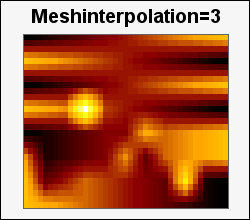
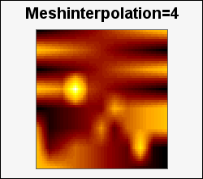
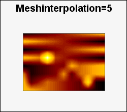

メッシュ補間を利用するとマトリックス・プロットの体裁がスムーズに見えるようにできます。これは元のマトリックスの入力データ間にリニア補間した中間値を生成するためです。
補間ファクターでは、補間再現の頻度を指定する必要があります。通常は２から６の範囲になります。６より大きい値を指定することは可能ですが、補間ファクター上で補間回数が激増することになります。また、この補間はマトリックスにすでに存在する情報以上のものを生成することはないことにご留意ください。このようなデータのリニア補間ではマトリックスの基礎データが完全に有効であることを検証することが必要です。
次の図は元データ（補間頻度=1）を１〜５回補間した場合の効果を表した例です。ここで選択しているグラフ・サイズでは、5回の補間によってグラフ・エリアの制約によりモジュールが1x1ピクセルになってしまったので、これ以上の補間は意味がありません。（8x11の元データを5回補間すると113x161のマトリックスになっています。）
|  |  |  |
|  |  |
プロットのサイズが異なるのは、マトリックスの各セルに整数のピクセル数を格納する必要があるためです。上のグラフでは最大のモジュール・サイズを使いましたが画像内に収まってています。つまり、見栄えが異なるわけです。
この補間を行うには2通りの方法があります。
$matrixplot = new MatrixPlot($data,4); // 補間4回 宣言からわかるように、これは元のデータが指定された回数補間された新規データに置換されるリファレンス・メソッドです。この方法により、大きいマトリックスを複数コピーして不要なデータを作ることが防げます。